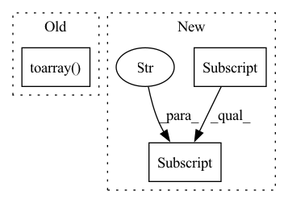

Pattern ID :10645
Before Change
def run(self, results: Dict[str, Any], resource: Resource):
assert results_available(results, "pre_process", "sentences"), "Sentences must be present"
tfidf = TfidfVectorizer()
tfidf_vectors = tfidf.fit_transform(results["pre_process"]["result"]["sentences"]).toarray()
task_results = {
"vectors": tfidf_vectors
}
return task_resultsAfter Change
task_results = {}
for split in ["train", "val", "test"]:
tfidf_vectors = tfidf_model.transform(
results["pre_process"]["result"][split]["sentences"] ).toarray()
task_results[split] = {"vectors": tfidf_vectors}
return task_results
In pattern: SUPERPATTERN
Frequency: 3
Non-data size: 3
Instances Fragment ID: 36875079
Project Name: fluidml/fluidml
Commit Name: 1e789cf21b7961ec070e6a1fd5696b9aec57f8c6
Time: 2020-12-24
Author: raj1514@gmail.com
File Name: examples/sklearn/without_gs.py
M Class Name: TFIDFFeaturizeTask
N Class Name: TFIDFFeaturizeTask
M Method Name: run(3)
N Method Name: run(3)
M Parent Class: Task
N Parent Class: Task
M File Name: examples/sklearn/without_gs.py
N File Name: examples/sklearn/without_gs.py
M Start Line: 60
M End Line: 65
N Start Line: 94
N End Line: 102
Before Change
features = self._generate_features(Gs ,labels ,dates)
gs_adj = [csr_matrix(nx.adjacency_matrix(kgs).toarray() .T) for kgs in Gs]
edge_index = [kgs.indices for kgs in gs_adj]
edge_weight = [kgs.data for kgs in gs_adj]
After Change
features = self._generate_features(Gs ,labels ,dates)
edge_index = [np.array([edge for edge in G.edges()]).T for G in Gs]
edge_weight = [np.array([G[edge[0]][edge[1]]["weight"] for edge in G.edges()]) for G in Gs]
y = list()
for i,G in enumerate(Gs): Fragment ID: 36875082
Project Name: benedekrozemberczki/pytorch_geometric_temporal
Commit Name: 466e77ca50b80afeb198e28f9bbd63f4c30d10f2
Time: 2021-03-30
Author: benedek.rozemberczki@gmail.com
File Name: torch_geometric_temporal/dataset/encovid.py
M Class Name: EnglandCovidDatasetLoader
N Class Name: EnglandCovidDatasetLoader
M Method Name: _read_web_data(1)
N Method Name: _read_web_data(1)
M Parent Class: object
N Parent Class: object
M File Name: torch_geometric_temporal/dataset/encovid.py
N File Name: torch_geometric_temporal/dataset/encovid.py
M Start Line: 43
M End Line: 45
N Start Line: 37
N End Line: 43
Before Change
def run(self, results: Dict[str, Any], resource: Resource):
assert results_available(results, "pre_process", "sentences"), "Sentences must be present"
tfidf = TfidfVectorizer()
tfidf_vectors = tfidf.fit_transform(results["pre_process"]["result"]["sentences"]).toarray()
task_results = {
"vectors": tfidf_vectors
}
return task_resultsAfter Change
task_results = {}
for split in ["train", "val", "test"]:
tfidf_vectors = tfidf_model.transform(
results["pre_process"]["result"] [split]["sentences"]).toarray()
task_results[split] = {"vectors": tfidf_vectors}
return task_results
Fragment ID: 36875083
Project Name: fluidml/fluidml
Commit Name: 28f2885d3db0eb5555b308fbb33c428ff4fe1ff7
Time: 2020-12-24
Author: raj1514@gmail.com
File Name: examples/sklearn/with_gs.py
M Class Name: TFIDFFeaturizeTask
N Class Name: TFIDFFeaturizeTask
M Method Name: run(3)
N Method Name: run(3)
M Parent Class: Task
N Parent Class: Task
M File Name: examples/sklearn/with_gs.py
N File Name: examples/sklearn/with_gs.py
M Start Line: 59
M End Line: 64
N Start Line: 94
N End Line: 102